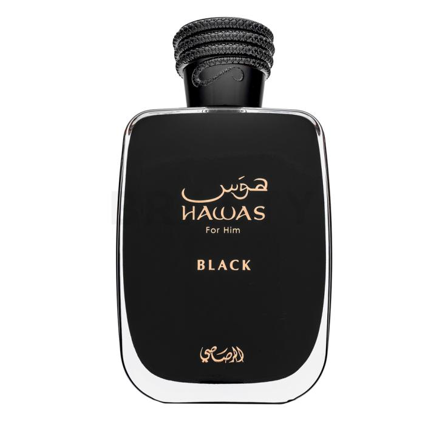
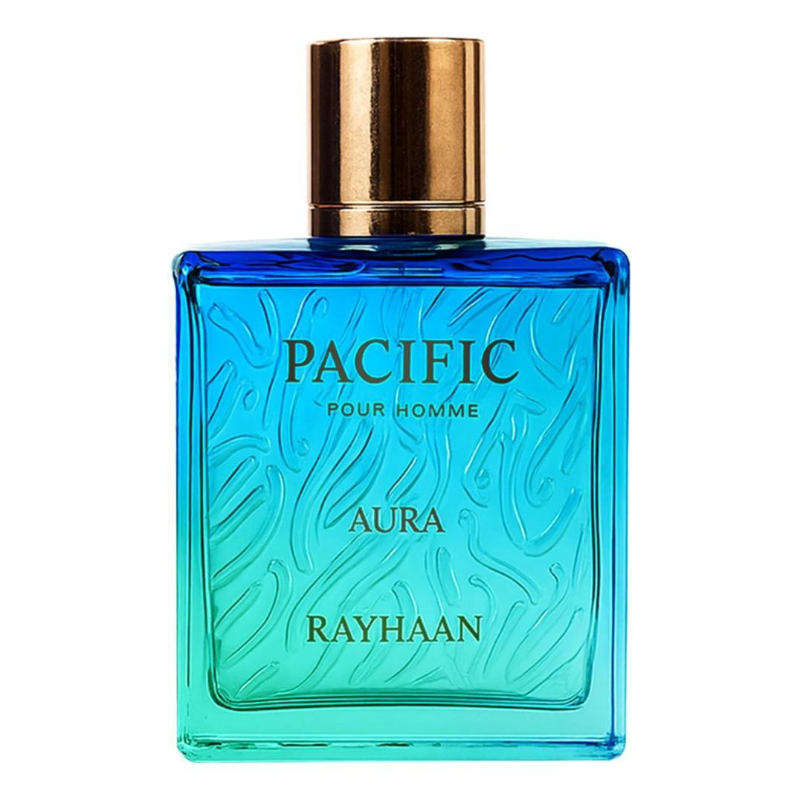
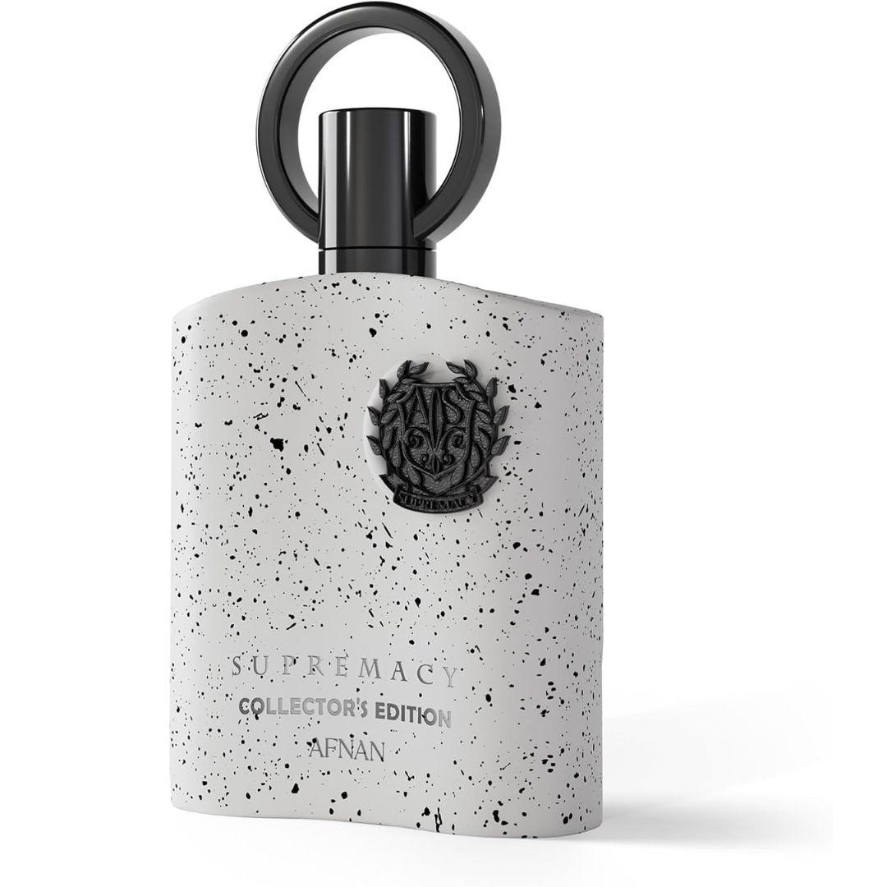

Custo-benefício
Fragrâncias que frequentemente oferecem propostas olfativas sofisticadas por preços mais acessíveis.
Tradição, intensidade e novas interpretações de grandes fragrâncias.
A perfumaria árabe possui uma longa tradição cultural, marcada pelo uso de ingredientes como oud, âmbar, almíscar, rosas e especiarias.
Atualmente, marcas como Rasasi, Afnan, Lattafa e Rayhaan conquistaram destaque internacional por oferecerem fragrâncias autorais e alternativas inspiradas em perfumes designers e de nicho.
Essas alternativas permitem conhecer propostas olfativas semelhantes às de fragrâncias famosas por preços geralmente mais acessíveis. Entretanto, um perfume inspirado não possui necessariamente a mesma composição ou desempenho do original.
Fragrâncias que frequentemente oferecem propostas olfativas sofisticadas por preços mais acessíveis.
Muitos perfumes árabes são conhecidos pela intensidade, boa fixação e projeção, embora o desempenho varie entre produtos.
Interpretações de fragrâncias famosas, além de criações próprias que valorizam a tradição e a criatividade.

Uma fragrância frutada e amadeirada, com nuances cítricas e terrosas. Frequentemente comparada ao Hacivat, da casa de nicho Nishane.
Frutado e amadeirado Site oficial ↗
Uma fragrância fresca, frutada e cítrica, com proposta olfativa frequentemente associada ao Pacific Chill da Louis Vuitton.
Cítrico e frutado Site da marca ↗
Uma composição frutada e amadeirada, com nuances frescas e sofisticadas. Frequentemente comparada ao Absolu Aventus da Creed.
Frutado e amadeirado Site oficial ↗Conheça a criatividade da perfumaria brasileira, suas criações autorais e seus contratipos.
Próxima categoria →